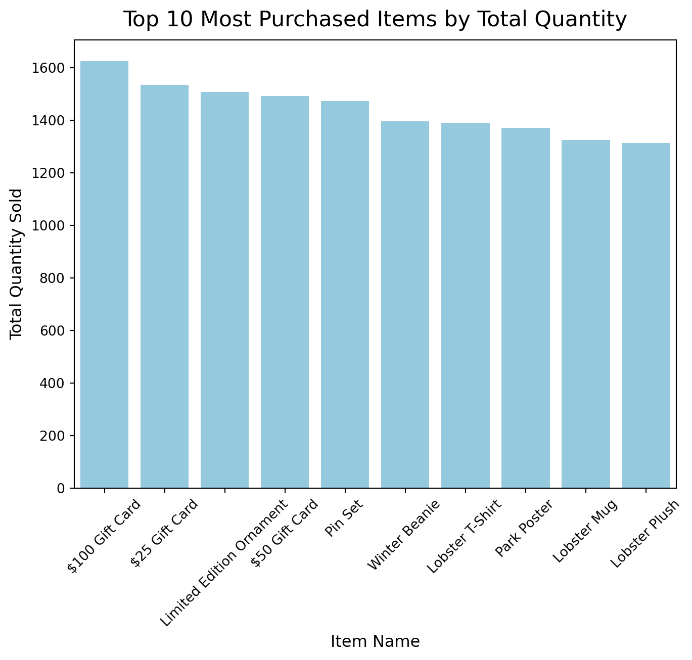
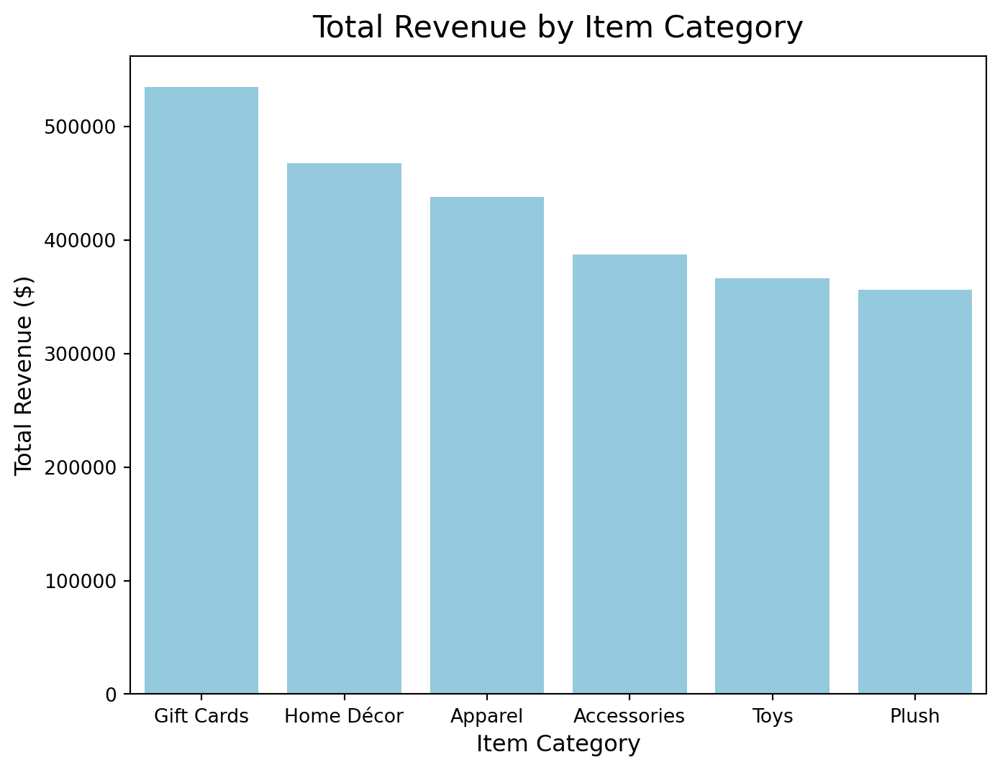
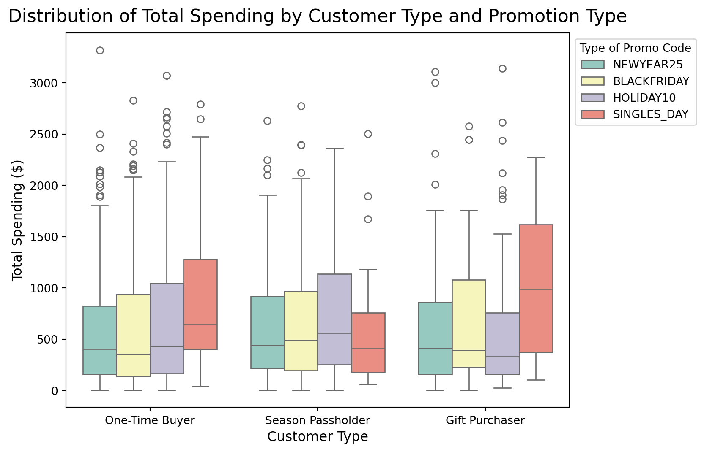
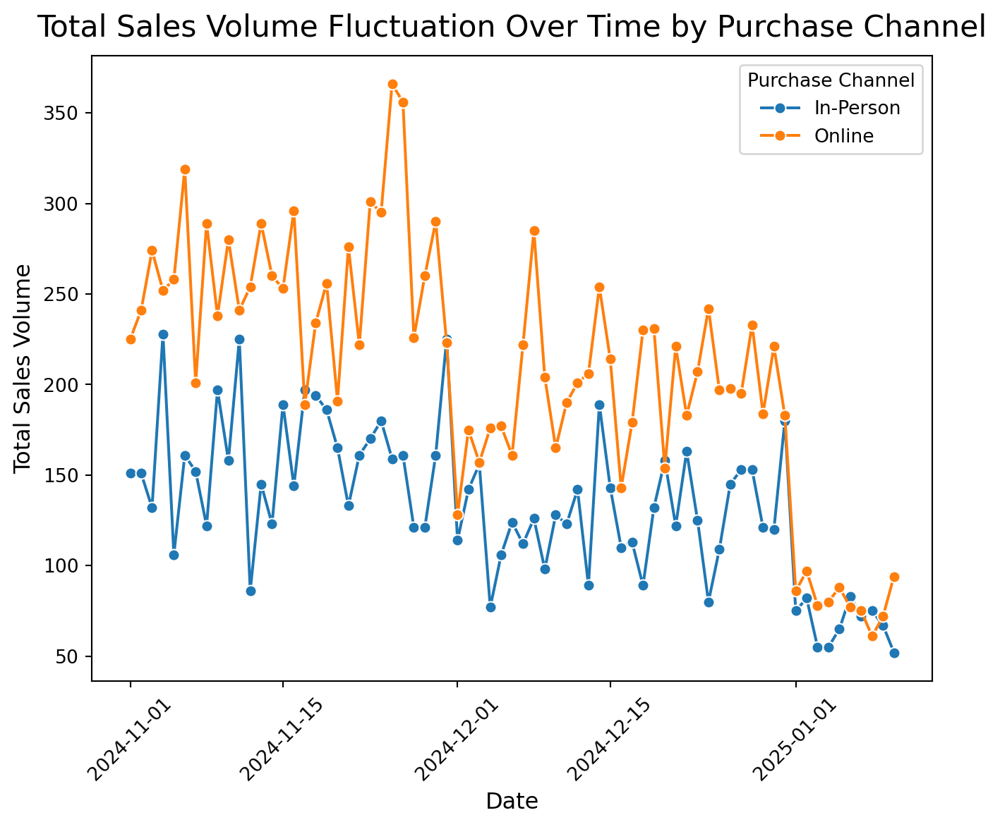
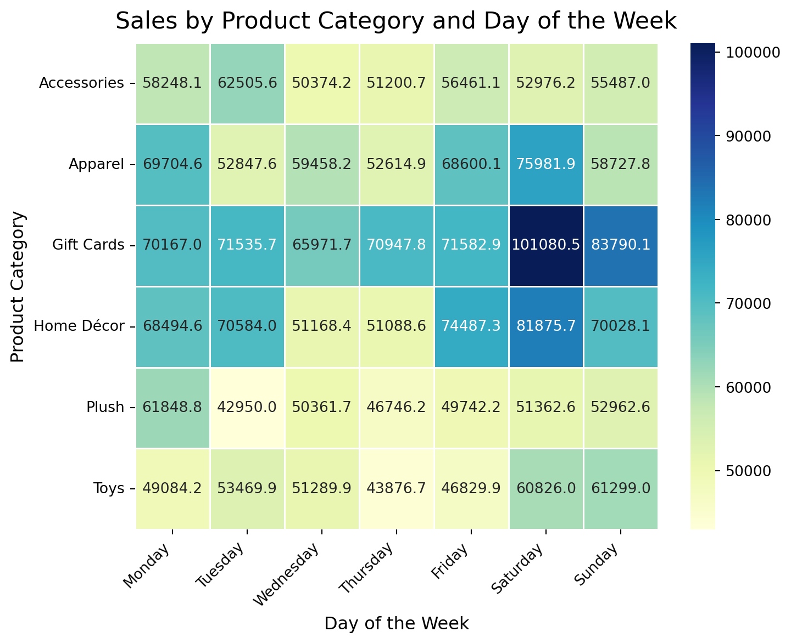
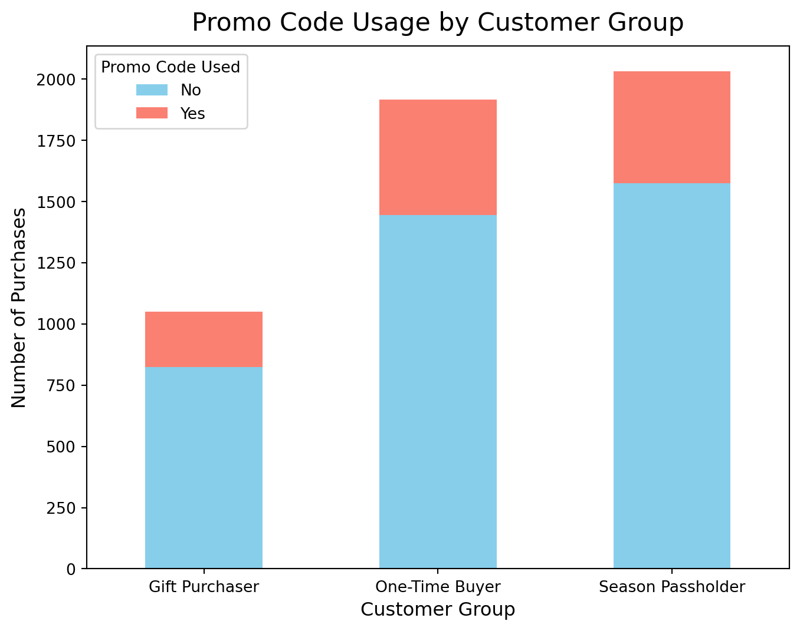
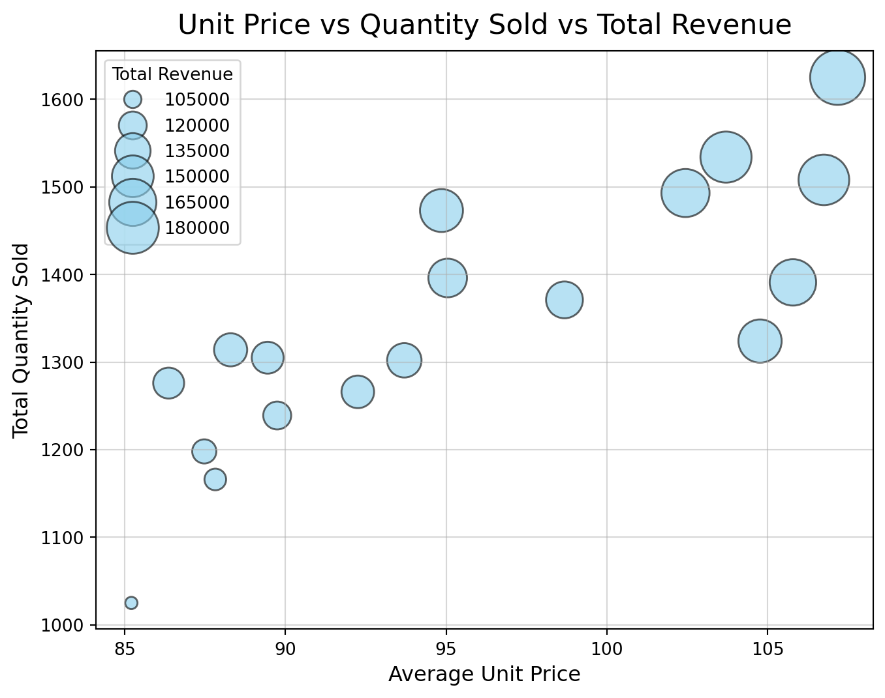

import pandas as pd
import seaborn as sns
import matplotlib.pyplot as plt🦞 Lobsterland Consumer Insights
Analyzing Sales Data to Uncover Consumer Behavior and Trends
1 Data Exploration & Manipulation
lobsterland = pd.read_csv("Datasets/lobsterland_holiday_sales_data.csv")
lobsterland.head()| order_id | customer_id | purchase_date | item_category | item_name | quantity | unit_price | total_price | payment_method | customer_type | purchase_channel | promo_discount | promo_code | |
|---|---|---|---|---|---|---|---|---|---|---|---|---|---|
| 0 | ORD13453 | 7556 | 2024-12-22 | Home Décor | Park Poster | 5 | 136.89 | 684.45 | Credit Card | One-Time Buyer | Online | True | NEWYEAR25 |
| 1 | ORD31238 | 1300 | 2024-11-24 | Toys | Park Puzzle | 9 | 21.19 | 190.67 | PayPal | Season Passholder | Online | True | NaN |
| 2 | ORD50052 | 4365 | 2024-12-28 | Accessories | Keychain | 5 | 142.56 | 712.78 | Credit Card | One-Time Buyer | Online | True | NaN |
| 3 | ORD83074 | 2263 | 2024-11-15 | Accessories | Snow Globe | 5 | 108.16 | 540.80 | Credit Card | Season Passholder | In-Person | True | NEWYEAR25 |
| 4 | ORD34458 | 9357 | 2024-11-18 | Gift Cards | $25 Gift Card | 7 | 44.30 | 310.08 | PayPal | Season Passholder | Online | True | NaN |
lobsterland.info()<class 'pandas.DataFrame'>
RangeIndex: 5000 entries, 0 to 4999
Data columns (total 13 columns):
# Column Non-Null Count Dtype
--- ------ -------------- -----
0 order_id 5000 non-null str
1 customer_id 5000 non-null int64
2 purchase_date 5000 non-null str
3 item_category 5000 non-null str
4 item_name 5000 non-null str
5 quantity 5000 non-null int64
6 unit_price 5000 non-null float64
7 total_price 4950 non-null float64
8 payment_method 5000 non-null str
9 customer_type 5000 non-null str
10 purchase_channel 5000 non-null str
11 promo_discount 5000 non-null bool
12 promo_code 1159 non-null str
dtypes: bool(1), float64(2), int64(2), str(8)
memory usage: 473.8 KBMy assumption is that NaNs in ‘promo_code’ column indicates the customer did not use any promotional code on that purchase. Thus, I will leave the NaNs in the promo_code column alone. It is okay sometimes to leave missing values because they are informative, for example, they indicate the absence of something, and may not significantly affect the analysis.
ALso, there are 50 missing values in ‘total_price’ column. I choose to replace these missing values by calculating them as total_price = quantity × unit_price. It’s because according to the description of the variable, the total_price can be inferred by multiplying these two values, and there are no missing values in ‘quantity’ and ‘unit_price’ columns.
lobsterland['total_price'] = lobsterland['total_price'].fillna(
lobsterland['quantity'] * lobsterland['unit_price']
)lobsterland.isnull().sum()order_id 0
customer_id 0
purchase_date 0
item_category 0
item_name 0
quantity 0
unit_price 0
total_price 0
payment_method 0
customer_type 0
purchase_channel 0
promo_discount 0
promo_code 3841
dtype: int64Here, I converted purchase_date to a proper datetime format.
lobsterland['purchase_date'] = pd.to_datetime(lobsterland['purchase_date'])
lobsterland.info()<class 'pandas.DataFrame'>
RangeIndex: 5000 entries, 0 to 4999
Data columns (total 13 columns):
# Column Non-Null Count Dtype
--- ------ -------------- -----
0 order_id 5000 non-null str
1 customer_id 5000 non-null int64
2 purchase_date 5000 non-null datetime64[us]
3 item_category 5000 non-null str
4 item_name 5000 non-null str
5 quantity 5000 non-null int64
6 unit_price 5000 non-null float64
7 total_price 5000 non-null float64
8 payment_method 5000 non-null str
9 customer_type 5000 non-null str
10 purchase_channel 5000 non-null str
11 promo_discount 5000 non-null bool
12 promo_code 1159 non-null str
dtypes: bool(1), datetime64[us](1), float64(2), int64(2), str(7)
memory usage: 473.8 KBI calculated the average order total for purchases with vs. without a promo code. The average order total for purchases with a promo code is much higher than purchases without a promo code. However, it’s impossible to draw any conclusions about the effectiveness of the promotions based on these results alone because it does not provide enough insight. For example, promo codes could have been used during certain periods (such as seasonal promotion), which might influence the types of products purchased and the total price. In addition, high-spending orders might coincide with promotions, not because the promo causes higher spending, but because certain high-value items or customer segments are more likely to use promos.
lobsterland['promo_used'] = lobsterland['promo_code'].notnull()
lobsterland.groupby('promo_used')['total_price'].mean()promo_used
False 465.668847
True 657.468412
Name: total_price, dtype: float64I also grouped the average total spending by two categories - purchase channel and item category.
lobsterland.groupby(['purchase_channel', 'item_category'])['total_price'].mean()purchase_channel item_category
In-Person Accessories 325.739144
Apparel 647.259572
Gift Cards 672.561639
Home Décor 661.847645
Plush 318.659181
Toys 279.366465
Online Accessories 532.706110
Apparel 477.386878
Gift Cards 564.457457
Home Décor 546.987500
Plush 517.380170
Toys 526.305451
Name: total_price, dtype: float64In-person shoppers tend to spend more on apparel, gift cards, and home décor than online shoppers, and the average total spending on accessories, plush and toys is significantly lower in this channel. Online shoppers tend to spend more on accessories, plush, and toys compared to in-person shoppers, and the average total spending on apparel is the lowest.
Apparel and home décor might require more tactile and shopping experiences, such as trying on clothes and checking the physical quality of home décor, which in-person shopping can provide. As a result, customers are more likely to spend more on these items in person. Accessories, plush, and toys might benefit from the ease of online shopping, where consumers can browse easily and have a wider variety to choose from. And the convenience of home delivery can encourage them to spend more on these products.
2 Data Visualization
2.1 Top 10 Most Purchased Items by Total Quantity
item_quantity = lobsterland.groupby('item_name')['quantity'].sum().sort_values(ascending=False).reset_index()
plt.figure(figsize = (8, 6))
sns.barplot(x = 'item_name', y = 'quantity', data = item_quantity.head(10), color = 'skyblue')
plt.title('Top 10 Most Purchased Items by Total Quantity', fontsize = 16, pad = 10)
plt.xlabel('Item Name', fontsize = 12)
plt.ylabel('Total Quantity Sold', fontsize = 12)
plt.xticks(rotation = 45);
The plot shows that among the top 10 most purchased items, gift cards are the most purchased items, with the $100 Gift Card leading in quantity sold (1625 units). The $50 Gift Card is less popular than the $100 Gift Card and $25 Gift Card, but it still rank high. Products like the Limited Edition Ornament, Pin Set, and Winter Beanie also have strong sales, but their quantities are lower compared to the gift cards. This plot also has some limitations. While the plot shows the most purchased items by total quantity, it doesn’t provide information about total revenue or profit margin, so the company can’t determine if these items are the most profitable. Moreover, the plot doesn’t reveal any seasonal patterns or trends, such as whether the gift cards are being purchased more during holidays or specific promotions. As a result, it’s hard to draw conclusions about consumer behavior.
2.2 Total Revenue by Item Category
category_revenue = lobsterland.groupby('item_category')['total_price'].sum().sort_values(ascending=False).reset_index()
plt.figure(figsize = (8, 6))
sns.barplot(x = 'item_category', y = 'total_price', data = category_revenue, color = 'skyblue')
plt.title('Total Revenue by Item Category', fontsize = 16, pad = 10)
plt.xlabel('Item Category', fontsize = 12)
plt.ylabel('Total Revenue ($)', fontsize = 12);
The Gift Cards category generates the most revenue. This plot shows that gift cards contribute the most to total revenue, which may indicate this flexible and popular gift option is in high demand. Furthermore, Categories like Home Décor and Apparel follow behind, generating significant revenue as well. These categories are likely popular for both everyday and seasonal purchases. Finally, categories like Toys and Plush still generate good revenue, but they are far behind the top three, showing that they might be more niche in terms of consumer demand. The plot suggests that consumers prefer items from categories such as Gift Cards, Home Décor, and Apparel. This pattern is likely linked to lifestyle purchases, holidays, or gift-giving trends.
2.3 Distribution of Total Spending by Customer and Promotion Type
plt.figure(figsize = (8, 6))
sns.boxplot(x = 'customer_type', y = 'total_price',
hue = 'promo_code', data = lobsterland, palette = 'Set3')
plt.title('Distribution of Total Spending by Customer Type and Promotion Type', fontsize = 16, pad = 10)
plt.xlabel('Customer Type', fontsize = 12)
plt.ylabel('Total Spending ($)', fontsize = 12)
plt.legend(title = 'Type of Promo Code', bbox_to_anchor=(1, 1), loc='upper left');
According to the boxplot, One-Time Buyers and Gift Purchasers have a slightly wider spread in total spending compared to Season Passholders. This may indicate that Season Passholders have more consistent customer spending behavior, and the consumption behavior of this group is not easily affected by changes in promotion types. With the SINGLES_DAY promotion, the median spending among Gift Purchasers seems much higher than other type of customers and promotions. This may be because different promotions lead to different spending distributions among different customer groups. For example, the SINGLES_DAY promotion encouraged higher spending among Gift Purchasers, while the HOLIDAY10 promotion would encourage Season Passholders to spend more. The BLACKFRIDAY and NEWYEAR25 promotions show moderate spending across all customer types, likely because these promotions were widely used. All categories of customer types have significant outliers, indicating that some customers spent much more than the average. Season Passholders have relative few outliers. This may be because Season Passholders might already have benefits, leading to lower additional spending. The largest number of outliers are found among One-Time Buyers, which could be influenced by deep discounts like Black Friday and other holiday sales, leading to varied spending patterns. Gift Purchasers have more outliers on HOLIDAY10 and NEWYEAR25 promotions. They may buy for others, especially during the holidays, leading to higher spending.
2.4 Total Sales Volume Fluctuation Over Time by Purchase Channel
sales_by_channel = lobsterland.groupby(['purchase_date', 'purchase_channel'])['quantity'].sum().reset_index()
plt.figure(figsize = (8, 6))
sns.lineplot(x = 'purchase_date', y = 'quantity',
hue = 'purchase_channel', marker = 'o', data = sales_by_channel)
plt.title('Total Sales Volume Fluctuation Over Time by Purchase Channel', fontsize = 16, pad = 10)
plt.xlabel('Date', fontsize = 12)
plt.ylabel('Total Sales Volume', fontsize = 12)
plt.xticks(rotation = 45)
plt.legend(title = 'Purchase Channel');
This line plot shows that online sales volumn is consistently higher than in-person sales throughout this period. Both sales channels experience noticeable peaks and dips over time. Around early December, there is a sharp decline in both online and in-person sales, followed by some fluctuations. Both channels have a sharp decline after the holiday: After January 1st, sales volumes drop significantly for both channels and remain low.
There might be some reasons for this trend. Firstly, the strong sales in early November could be due to pre-holiday shopping events like Black Friday, which typically drive high online spending. After that, the sharp drop could indicate a temporary pause after major sales events, as consumers wait for more discounts closer to Christmas. In mid-December, sales rise again, likely driven by last-minute holiday shopping. During this period, the difference between online and in-person sales narrows as customers may prefer immediate purchases rather than delayed shipping. Finally, after January 1st, sales drop sharply. This may be because the holiday shopping season and promotions end, and people are cutting back on spending after the holidays.
2.5 Sales by Product Category and Day of the Week
lobsterland['day_of_week'] = lobsterland['purchase_date'].dt.day_name()
sales_by_day = lobsterland.groupby(['day_of_week', 'item_category'])['total_price'].sum().reset_index()
sales_heatmap = sales_by_day.pivot(index = 'item_category', columns = 'day_of_week', values = 'total_price')
days_order = ["Monday", "Tuesday", "Wednesday", "Thursday", "Friday", "Saturday", "Sunday"]
sales_heatmap = sales_heatmap[days_order]
plt.figure(figsize = (8, 6))
sns.heatmap(data = sales_heatmap, annot = True, linewidth = 0.5, fmt = '.1f', cmap = "YlGnBu")
plt.title('Sales by Product Category and Day of the Week', fontsize = 16, pad = 10)
plt.xlabel('Day of the Week', fontsize = 12)
plt.ylabel('Product Category', fontsize = 12)
plt.xticks(rotation = 45, ha = 'right');
In this heat map, gift card sales are always the highest, increase significantly on Saturdays, and remain high on Sundays. This suggests customer demand for gift cards increase over weekends. Both Home Décor and Apparel see higher sales on Fridays and weekends, especially Saturdays. Toys sell more on weekends, while Plush sells more on Monday. Both Plush and Toys have lower sales from Tuesday to Friday. Accessories have higher sales on Monday and Tuesday. These differences may be related to the customer behavior and shopping habits. For example, parents are more likely to shop for their children over the weekend and less likely to buy non-essential items on workdays. Moreover, weekends are peak shopping times for gift items, home décor, and apparel as people have more time to browse. Finally, some categories might have promotions on Mondays, which can explain the increase in sales on this day.
2.6 Promo Code Usage by Customer Group
promo_used_group = lobsterland.groupby(['customer_type'])['promo_used'].value_counts().unstack()
promo_used_group.plot(kind = 'bar', stacked = True, figsize = (8, 6), color = ['skyblue', 'salmon'])
plt.title('Promo Code Usage by Customer Group', fontsize = 16, pad = 10)
plt.xlabel('Customer Group', fontsize = 12)
plt.ylabel('Number of Purchases', fontsize = 12)
plt.xticks(rotation = 0)
plt.legend(title = 'Promo Code Used', labels = ['No', 'Yes'], loc = 'upper left');
This plot show One-Time Buyers are most likely to use promo codes. In this plot, all customer groups make more purchases without promo codes. One-Time Buyers have the highest proportion of transactions that include a promo code, while the Gift Purchasers have the lowest percentage. To explain this to the Lobster Land Merchandise Department, I would like to highlight the following points. Firstly, One-Time Buyers are more promo-sensitive than the other groups. This group contains new customers to the Lobster Land. They are more likely to respond to promotional offers, possibly because they’re still evaluating the brand. Lobster Land could consider designing special offers or discount programs aimed at converting them into repeat customers. Secondly, although Season Passholders and account for a larger number of transactions overall, their relative use of promo codes is lower. This might indicate that these groups are less driven by promotions. Lobster Land should consider other ways, such as loyalty benefits or special edition products to influence their purchasing decisions. Finally, Gift Purchasers use promo codes the least and make the fewest purchases. This may mean that their shopping is very purposeful and not easily driven by discounts. It’s important for the Merchandise Department to understand their purchase timing and gift-giving motivations, which can refine marketing strategies to better target these customers.
2.7 Unit Price vs Quantity Sold vs Total Revenue
item_sales = lobsterland.groupby('item_name').agg(
total_quantity = ('quantity', 'sum'),
avg_unit_price = ('unit_price', 'mean'),
total_revenue = ('total_price', 'sum')
).reset_index()
plt.figure(figsize=(8, 6))
sns.scatterplot(data = item_sales, x = 'avg_unit_price', y = 'total_quantity',
size = 'total_revenue', sizes = (50, 1000),
color = 'skyblue', alpha = 0.6, edgecolors = 'black')
plt.title('Unit Price vs Quantity Sold vs Total Revenue', fontsize = 16, pad = 10)
plt.xlabel('Average Unit Price', fontsize = 12)
plt.ylabel('Total Quantity Sold', fontsize = 12)
plt.grid(True, alpha = 0.5)
plt.legend(title = 'Total Revenue');
In this plot, higher-priced items generally sell in larger quantities. This bubble plot shows that there isn’t a clear inverse or direct correlation between unit price and quantity sold. Some higher-priced items sell in large quantities, while some relatively lower-priced items also perform well. However, items with higher unit tend to have more higher quantity sold. Most of the largest bubbles (indicating high total revenue) appear in the upper right corner of this plot, suggesting that expensive items can still generate great a large quantity sold. The smaller bubble appear in the lower left part of this plot, indicating that customers are not buying more low-priced items. There’s some interesting observations in the plot. There are some high-priced items (above 100) that have highest quantities sold, which contradicts the expectation that lower prices always drive higher sales. Moreover, some lower-priced items have relatively low sales, which might indicate that price alone isn’t the key factor driving purchases. Other factors like demand, brand perception, or product necessity could play a key role in shopping decisions. Finally, the largest bubbles, representing the highest revenue, tend to cluster around mid-to-higher price points, meaning that maximizing revenue might not always come from selling cheap products in bulk.